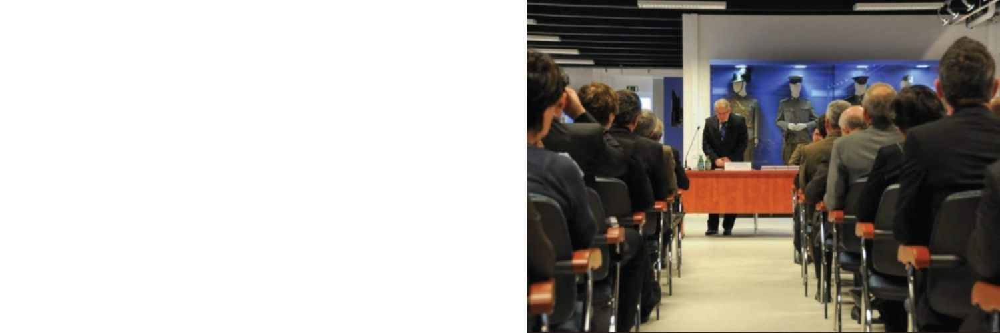
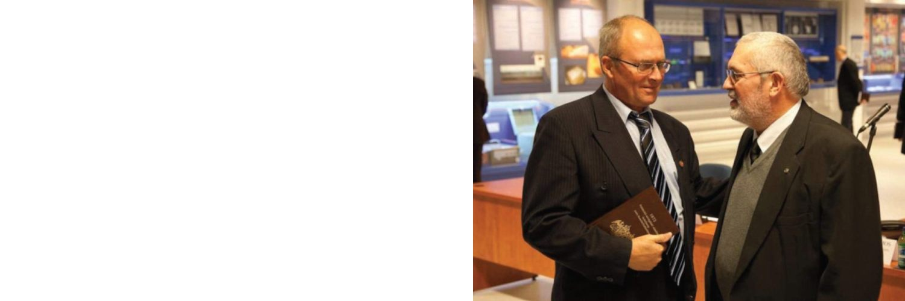

Társaságunk elnöke, dr. Parádi József székfoglalója a Rendőrtiszti Főiskolán 1984.

Condita decrescit vulgata scientia crescit.
Az elrejtett tudás elsorvad, a másokkal megosztott gyarapszik.
Tudományos párbeszéd: Szemere Bertalan Magyar Rendvédelem-történeti Tudományos Társaság – Nemzetbiztonsági Szakszolgálat szakmatörténeti konferencia.

Veritas nunquam perit.
Az igazság sosem vész el.
Dr. Parádi József és dr. Sándor Vilmos † az 1872-es Felderítőszolgálati utasítás (Anleitung zum Kundschaftsdienste) c. háromnyelvű társasági kiadványunk könyvbemutatóján.
Honos honestum decorat, inhonestum notat.
A kitüntetés a méltót ékesíti, a méltatlant bélyegezi.
Érdem és elismerés. Társaságunk mag. Zeidler Sándor által tervezett kitüntetései.